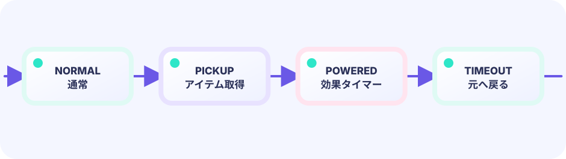

パワーアップ取得
緑オーブとプレイヤーが重なった瞬間に big = true にし、プレイヤーの高さを増やします。オーブは powerTaken フラグで一度しか取れません。
g.big = true; g.p.h = 54
★★★★☆ / PLAYABLE
コインを集め、緑のオーブでパワーアップし、敵を踏み倒してゴールへ。パワーアップ状態が敵との接触結果を変える、マリオ式アドベンチャーの集大成です。
このコースも LEVEL 01 で学んだ Update（数字）→ Draw（絵） のくり返しの上に、新しい部品を1つ足していきます。
SHOWCASE FINAL / QUALITY LEAP
ここまでの小さな仕組みを全部つなぎ、アート、動き、光、音、UI、リプレイ性まで一気に磨いた最終ステップです。すべてを今すぐ書けなくても大丈夫。Ebitengineで到達できる景色を、まず遊んで確かめてください。
PLAYABLE / WEBASSEMBLY
A・D または画面下タッチで移動。スペースまたは画面上タッチでジャンプ。夕焼けの飛び石や夜の階段など、面ごとに地形と敵の並びが変わります。コインや敵には粒子演出が入り、走る海老も上下に弾みます。
はじめて読む人へ
状態管理は今の強化をGameへ保存すること。bigは『大きい姿か』を覚えるtrue/falseの印です。取得矩形が重なったらitem.kindに応じてspeed・jump・HP・bigを変えます。 PLAYABLEは『このページで実際に操作できる』という印です。
このページの1本
説明と次のコードを対応させてから、ゲームで変化を確かめよう。
if item.kind==Grow { g.big=true }
DEEP DIVE / POWERUP STATE
ゲームは big というフラグを持っています。緑のオーブに触れると big = true になり、プレイヤーの高さが 38 → 54 に変化します。この状態で敵に横から当たると、ライフを失う代わりに big = false に戻るだけ。ひとつのフラグが「接触の結果」をまるごと書き換えます。
緑オーブとプレイヤーが重なった瞬間に big = true にし、プレイヤーの高さを増やします。オーブは powerTaken フラグで一度しか取れません。
g.big = true; g.p.h = 54
敵との接触を3通りに分けます。①踏んだ → 敵を消す、②big のまま横当たり → small に戻る、③small で横当たり → ライフ減少。
if g.big { g.big = false }
コインと重なるたびにスライスから削除し、100点加算します。踏んだ敵は 200点。ゴール到達で 500点のボーナスです。
g.score += 100
TRY IT / LAB
powered フラグが立つと、敵接触がダメージから踏みつけへ変わります。
本物のゲームの公式を、手でゆっくり回す模型です。
TRY IT · GO
powered := g.powered if powered { stomp } else { takeDamage }
—
THE ONE-LINE RULE
if big { ダメージ1段階緩和 }
それ以外
else { ライフを減らす }
パワーアップは「ダメージを吸収するバッファ」です。big の場合は1段階だけ状態を戻し、small のときと同じ接触処理に移行します。一種のダメージ階層です。
IN THE REAL GAME
踏みチェック → big チェック → ダメージ、という順番で分岐します。パワーアップ取得もシンプルな overlap でコインと同じ仕組みです。
// パワーアップ取得
if !g.powerTaken && overlap(g.p, g.power) {
g.powerTaken = true
g.big = true
g.p.y -= 16 // 大きくなる分だけ上にずらす
g.p.h = 54
}
// 敵との接触
if overlap(g.p, e.rect) {
if g.vy > 0 && old <= e.y+8 {
e.alive = false; g.vy = -8; g.score += 200
} else if g.big {
g.big = false; g.p.h = 38 // 1段階ダウン
e.vx = -e.vx; g.p.x -= 20
} else {
g.life--; g.load() // ライフ減少
}
}WITHOUT STATE FLAG
フラグがないと全接触が同じ処理になります。パワーアップの「ワンチャン」感がなく、ゲームプレイの深みが失われます。
WITH POWER STATE
bool 1つで戦略の幅が広がります。「オーブを先に取る？後で取る？」という判断がゲームに生まれます。
YOUR FIRST TUNING
big のとき g.p.h = 54 を増やすとさらに大きくなります。速度ボーナス（vx の上限を上げる）や無敵時間（フレームカウンタで管理）なども同じフラグ方式で追加できます。
FEEDBACK
BONUS / DRAW ONLY
これは上の完成ゲームと同じパッケージから作ったWASMです。UpdateとLayoutには手を加えず、そのまま呼びます。1回のDrawが作った同じ瞬間を、通常、輪郭線、矩形モザイクへ同時に投影します。位置、得点、敵、当たり判定、時間は1つしかありません。
入力とゲームの事実を進める。3画面で共通。
元ゲームの大きさをそのまま返す。
同じsnapshotの見せ方だけを替える。
THE ONLY BOUNDARY
矩形版はsnapshotを小さな格子へ縮め、nearestで戻します。ワイヤ版は隣の画素との差をKageシェーダーで線にします。どちらもゲーム状態を読み書きしません。
func (g *gallery) Update() error {
return g.inner.Update()
}
func (g *gallery) Layout(w, h int) (int, int) {
return g.inner.Layout(w, h)
}
func (g *gallery) Draw(screen *ebiten.Image) {
snapshot := ebiten.NewImage(width, height)
g.inner.Draw(snapshot)
drawPolished(screen, snapshot)
drawWireframe(screen, snapshot)
drawRectangles(screen, snapshot)
}